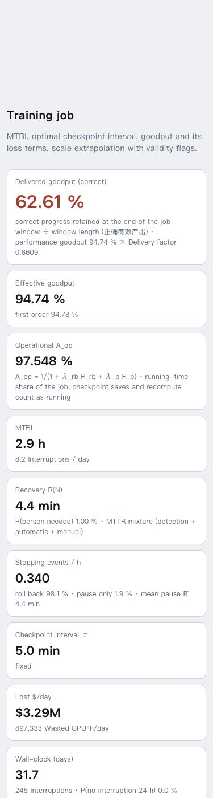
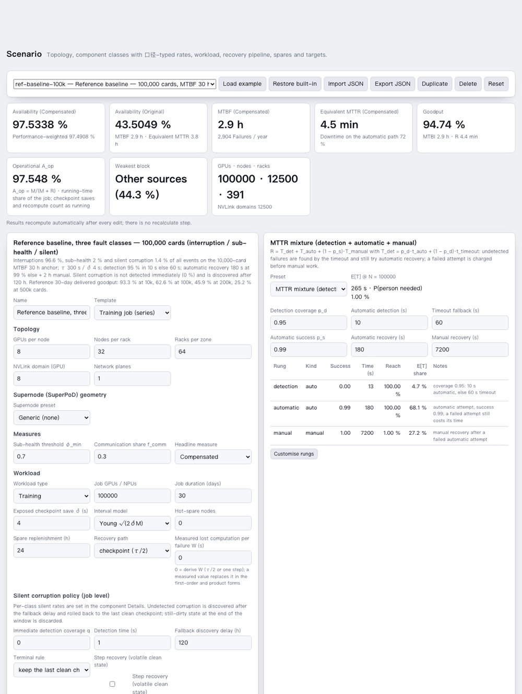
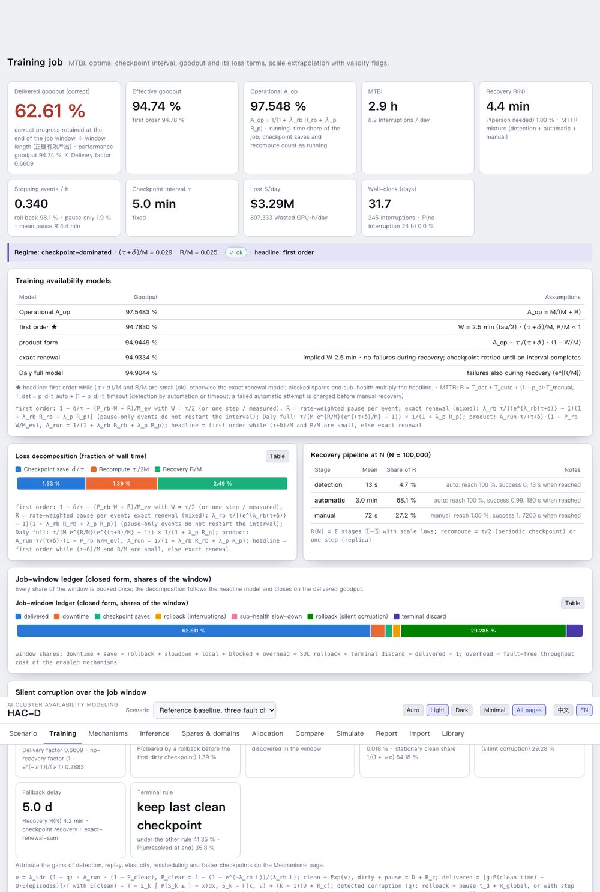
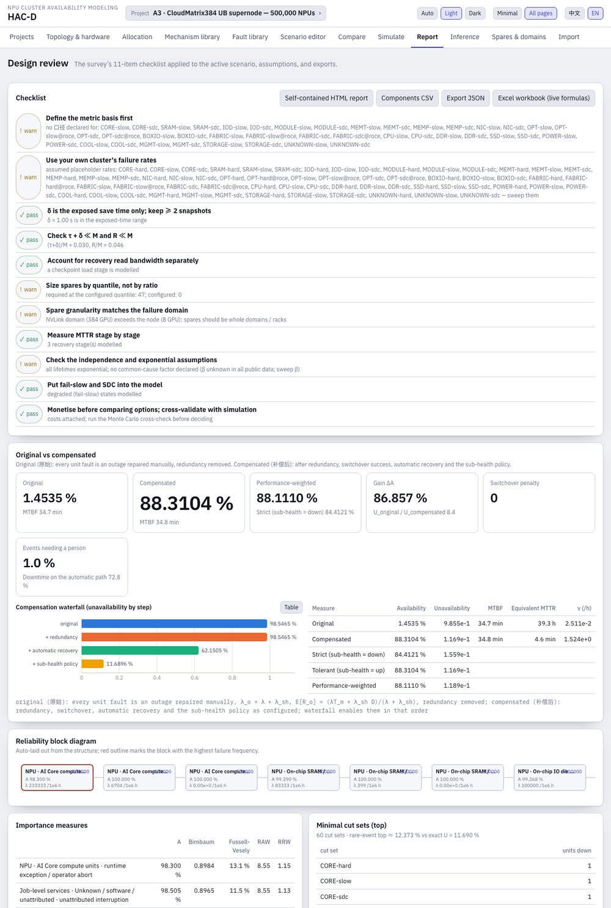

HAC-D User Manual
1. What HAC-D is
HAC-D turns a cluster description (topology, component classes with failure and repair parameters, workload, recovery policy, fault-management mechanisms) into availability, mean time between interruptions, recovery time, goodput and cost figures, and then helps allocate a target back to subsystems and mechanisms. It is grounded in the survey chapter AI 集群可靠性建模 and cross-checked against an independent reference engine (an audited 30-day discrete-event simulator of one training job).
1.1 Principles
- Every number carries its formula and its 口径. A rate is an event class per denominator at a level (for example hard interruptions per card-hour at job level). Quantities of different event classes are never added.
- Closed forms first, with validity flags. The first-order goodput checks τ + δ ≪ M and R ≪ M; when the flags fire the headline switches to the exact renewal form.
- Monte Carlo when the assumptions break. Non-exponential lifetimes, correlated failures, finite spare pools, finite windows and silent corruption route to simulation; the closed-form result stays visible with a delta badge.
- Provenance on every parameter. Library records and scenario inputs carry source, year and confidence (measured, paper-reported, vendor, derived, assumed, scan-level).
1.2 Architecture
| Package | Role | Notes |
|---|---|---|
packages/core | pure TypeScript numerics | units, math, RBD, CTMC, repair paths, recovery ladder, checkpoint and goodput models, SDC delivery (two terminal rules), mechanism chain (configurable rung order) and library, planner with checkpoint bounds, spares, MTTR, allocation with the loss budget, sensitivity, cost, Monte Carlo with Student-t and Wilson statistics, incident-rate estimation (Garwood), ReMAP catalog import, scenario schema and examples, parameter library (635 records) |
apps/web | Vite + React static app | bilingual zh / en, light and dark, computation in a Web Worker, eleven pages (minimal mode shows six) |
packages/cli | command line hacd | same functions as the web app, JSON or table output |
packages/mcp | MCP server | 18 tools for agents (evaluate, compare, allocate with the loss budget, tornado, simulate, library, Excel, mechanisms, ledger, planner, incident-rate estimation) |
packages/importers | Excel import and export | method fingerprinting of formulas, topology extraction, reconciliation, workbook export with live formulas |
2. Quick start
npm install # Node ≥ 20, npm workspaces npm run dev # web app on http://localhost:5173 npm test # 517 core + 29 importer tests (golden vectors included) node --import tsx packages/cli/src/main.ts examples # CLI claude mcp add hacd -- node --import tsx packages/mcp/src/server.ts # MCP server
In the web app: Scenario → Load example (ten built-in scenarios, see §16.3) → the other pages recompute automatically after every edit; there is no "recalculate" step. The language (中文 / EN) and theme (Auto / Light / Dark) switches sit in the header. Scenarios are kept in the browser's local storage; Export JSON saves one, Import JSON loads one, Restore built-in resets an example.

Minimal mode. The app opens with the training-availability core only (Scenario, Training, Mechanisms, Allocation, Import, Library); the header toggle All pages adds Inference, Spares & domains, Compare, Simulate and Report, and the choice is remembered. The screenshots in this manual show all pages; every function also stays in the CLI and the MCP server. ReMAP. scripts/remap-bridge.ts runs the expert engines ReMAP vendors on a HAC-D scenario and compares them with the closed forms, and hacd import-remap turns a ReMAP or reference event catalog into a scenario (see docs/REMAP_INTEGRATION.md).
3. Concepts and 口径
3.1 Metrics
| Metric | Definition | Where |
|---|---|---|
| Availability A (compensated, 补偿后) | steady-state probability that the system structure is up, with redundancy, switchover success, automatic recovery and the sub-health policy as configured | Scenario, Report |
| Original availability (原始) | same structure with every unit fault counted as an outage repaired manually and redundancy removed; the compensation waterfall adds the mechanisms one by one | Report |
| Strict / tolerant / performance-weighted | sub-health counted as down / as up / weighted by its performance factor | Report |
| MTBF, equivalent MTTR | A / ν_sys and (1 − A) / ν_sys from the steady-state failure frequency | Scenario |
| MTBI | mean time between job interruptions, 1 / Σ nᵢλᵢ (plus isolations of detected sub-healthy units) | Training |
| Recovery R(N) | mean time from interruption to productive training, excluding recompute; pipeline, ladder or mixture | Training |
| Operational availability A_op | running-time share 1 / (1 + λ_rb R_rb + λ_p R_p) (saves and recompute count as running) | Training, Compare |
| Goodput (first order, exact renewal, product, Daly) | useful computation per wall time under periodic checkpointing, §13.5 | Training |
| Effective goodput | headline goodput × (1 − P_blocked) × φ_job × (1 − ℓ_local): spares, sub-health and elastic-domain loss applied | Training, Compare |
| Delivered goodput (正确有效产出) | correct progress retained at the end of the job window ÷ window length, after silent-corruption rollback and terminal discard | Training, Allocation, Mechanisms |
| Capacity availability (inference) | probability that at least the required replicas are up in an N+k pool | Inference |
3.2 Fault classes
Three manifestations are modelled per component class, each with its own 口径 and its own handling:
- Interruption (中断): the unit stops; the job is detected down, recovers through the mechanism chain and the global checkpoint recovery, rolls back to the last checkpoint unless a no-rollback rung handled it.
- Sub-health (亚健康, fail-slow): the unit keeps running at a performance factor φ for a duration; the synchronous job is slowed (straggler law); the policy is tolerate or isolate (detected units are switched out after saving progress).
- Silent corruption (静默错误, SDC): the state is corrupted without an interruption; immediate detection catches a share, undetected corruption is discovered after a fallback delay and rolled back to the last clean checkpoint; still-dirty state at the end of the window is discarded.
3.3 Confidence and provenance
Each rate or time may carry provenance (source, organisation, year, URL, derivation) and a confidence tag. The library (§12.2) uses the same tags; the reference examples tag borrowed shares and targets as assumed. The planner (§6.3) derates assumed mechanism parameters; the Allocation page weights feasibility by confidence.
4. Scenario page

4.1 Topology and supernode presets
GPUs per node, nodes per rack, racks per zone, scale-up domain size and network planes define the count scopes (per gpu, node, rack, zone, fixed). A Supernode preset (CloudMatrix384 or a parametrised Atlas 950) adds the supernode geometry: NPUs per node, compute and communication racks, UB sub-planes, L2 chips per sub-plane and ports, L1 chips and links per node, transceivers per link. Component classes can then count per supernode, communication rack, L1 or L2 switch, sub-plane, optical link or transceiver. For CloudMatrix384 the derived counts are 48 nodes × 8 NPU, 7 sub-planes × 16 L2 chips, 5,376 optical links; fields the public sources do not give are marked assumed.
4.2 Component classes
| Field | Meaning |
|---|---|
| count rule | units per gpu / node / rack / zone / supernode scope, or a fixed count |
| failure rate and unit | per hour, per million hours, FIT, AFR, MTBF hours …; a Fleet MTBF anchor converts "N units with fleet MTBF M" into the per-unit rate |
| repair paths | manual MTTR, or dual-path: automatic coverage c, success s, automatic MTTR T_a, manual MTTR T_m (E[R] = c T_a + (1 − c s) T_m) |
| redundancy | series, parallel, k-of-n, standby; switchover success probability, outage per switchover, failed-switch recovery time |
| common cause | β factor and the domain it brings down (node, rack, supernode, sub-plane …) |
| sub-health | entry rate or steady-state probability, duration, performance φ, escalation multiplier, policy tolerate / isolate, detection probability and delay |
| silent corruption | silent events per unit-hour (job-level policy in §4.4) |
| mechanism applicability | fraction of this class's interruptions that replay, process rescheduling and DP elasticity can act on (the reference catalog's per-event flags aggregated per source) |
| infant mortality, lemons, Weibull shape | used by the Monte Carlo job simulation |
4.3 Workload and recovery
Training: job GPUs / NPUs (or supernodes used), duration, exposed checkpoint save δ, interval model (Young, Daly three-term, Daly exact, Saxena) or a fixed interval, hot-spare nodes and replenishment, recovery path (checkpoint τ/2 or replica one step), measured lost computation W. Inference: replicas required, GPUs per replica (one supernode as the unit), spare replicas, capacity target, SLO window.
Recovery: a pipeline of stages with scale laws (presets baseline-timeout-manual, automated-probe-standby, trainmover-8192-restart, elastic-replica), a ladder of rungs with success probabilities (mindcluster-a3, generic-auto-restart, or custom), or the MTTR mixture R = T_det + T_auto + (1 − p_s) T_manual with T_det = p_d t_auto + (1 − p_d) t_timeout.
4.4 Silent-corruption policy and mechanism chain
Job-level: immediate detection coverage q and time, fallback discovery delay D (120 h in the reference baseline), optional step recovery (redo at most t_step, recover in t_rec), and the terminal rule of the window: keep the last clean checkpoint (the audited review engine, default) or discard the whole window if it ends unresolved (the reference V4 and ReMAP legacy delivery rule; the two are different metrics and the Training page shows both values). The recovery mechanism chain enables replay (no rollback), DP-domain elasticity (no rollback; one of n domains out for t_el, global sync t_sync) and process rescheduling (rollback), each with success probability and success / failure times; the rung order control sets the order in which the detection-delayed rungs are tried (↑ moves a rung earlier; prediction and network failover always act first) before the global checkpoint recovery. Each component class also offers Rate from incident counts: de-duplicated events over units × hours give the rate, FIT, MTBF and the exact Garwood interval (zero events: the one-sided upper bound), and one click writes it into the class as a measured rate with its derivation.
4.5 Measures, targets, costs, JSON
Sub-health threshold φ_min (default 0.7: below it sub-health counts as down), communication share for fabric-plane loss, headline measure (compensated / original), goodput and availability targets, $ per GPU-hour. The scenario JSON editor at the bottom shows the full document (schema in docs/scenario.schema.json).
5. Training page

5.1 Reading the page
- Delivered goodput is the hero tile when the scenario has silent corruption; the effective goodput (performance) and the delivery factor are shown beside it.
- Regime line: (τ + δ)/M and R/M with the validity badge; the headline model (first order while ok, otherwise exact renewal).
- Models table: A_op, first order ★, product form, exact renewal (with the implied rollback W), Daly full model, with the assumption of each.
- Window ledger: delivered + downtime + saves + rollback + slow-down + elastic domain loss + spares + SDC rollback + terminal discard = 1 (closed form, decomposed with the headline model).
- Mechanism chain per class: applicable fractions, P(replay / elastic / process / global), P(rollback), mean pause, domain loss per event.
- Scale extrapolation: 1/N law with the chain, pause-only events and the SDC window applied per row; caution / invalid badges where the first-order flags fire; a supernodes column under a supernode preset.
5.2 The window ledger
5.3 Silent corruption over the window
6. Mechanisms page

6.1 Mechanism library
The twelve mechanisms of the reference catalog plus seven entries added from the literature (v3.2), each with the change it makes, its prerequisite, its failure path, the confidence of its parameters, an effort score (1–5) used by the planner and, where a method costs throughput even without failures, a fault-free overhead that multiplies the goodput. Sixteen have a scenario transform; three are informational (already in the baseline or no double credit). Chain order per interruption: prediction → network failover → replay → hot-swap → elasticity → process rescheduling → global checkpoint recovery → manual.
| ID | Mechanism | Scenario change (targets of the reference policy) | Effort |
|---|---|---|---|
| D-HARD | interruption detection / timeout fallback | mixture detection 95 % in 10 s → 99.9 % in 1 s | 2 |
| D-SLOW | sub-health detection | 95 % in 5 min → 99 % in 30 s on every sub-healthy class | 3 |
| D-SDC | immediate silent-corruption detection | coverage 0 → 95 %, 1 s; rollback to the last checkpoint + global recovery | 5 |
| R-SDC | clean step-state recovery (requires D-SDC) | detected corruption redoes ≤ 1 s and recovers in 1 s | 4 |
| R-REPLAY | operator / communication replay | 90 % in 5 s, no rollback; failure 10 s | 2 |
| R-PROCESS | process / pod rescheduling | 95 % in 60 s with rollback; failure 120 s | 3 |
| R-ELASTIC | DP-domain elasticity | 98 %; 1 of 50 domains out 180 s; 1 s sync; no rollback; failure 120 s | 5 |
| R-CKPT, R-MANUAL | global checkpoint recovery, manual recovery | baseline (3 min at 99 %, +2 h manual) | — |
| C-FAST | faster checkpoints | τ 300 s / δ 4 s → 60 s / 1 s | 3 |
| H-PROTECT | existing optical / power protection | informational: already in the residual rates | — |
| H-RELIABILITY | lower hardware failure rates | optional rate-reduction factor (no blanket assumption) | 4 |
| P-PREDICT | failure prediction with pre-emptive migration | recall 50 % of impending persistent faults become planned migrations (180 s, no rollback, no detection delay); precision 80 %, false alarms add pauses | 3 |
| R-NETFAIL | fault-tolerant collectives, multi-NIC failover | network-class failures absorbed inside the collective: 95 % in 2 s, no rollback | 3 |
| R-HOTSWAP | hot-swap of failed devices | card / server faults replaced from a spare in 180 s with 90 % success, no rollback | 4 |
| C-MEM | in-memory / tiered checkpointing | δ 0.5 s every 60 s, global recovery −60 s (memory load); 1 % overhead | 3 |
| D-SDC-DMR | dual modular redundancy / online integrity checks | silent detection 99.9 % in 1 s at an 8 % throughput overhead | 4 |
| H-LEMON | lemon-node eviction | interruption rates × (1 − 0.1 × 0.7) | 2 |
| H-SWEEP | offline node sweeps | sub-health entry rate × 0.5, duration × 0.5 | 2 |
6.2 Attribution
The page has its own scenario selector, preset to the 54-event reference catalog whose per-event mechanism flags reproduce combinations exactly (a warning appears for scenarios that declare per-class fractions); the other pages keep the active scenario. Select the players and the value function (delivered goodput, effective goodput or A_op), press Attribute: the selected mechanisms are stripped from the scenario (baseline), all 2ⁿ coalitions are evaluated with the closed forms, and the report gives single gains (each alone), last-added gains (added to all the others) and exact Shapley values, which sum to the combined gain. Substitutes (replay, elasticity, process rescheduling) show diminishing returns; complements (detection and step recovery) show up only together. The value function evaluates only the training block of each coalition (the block structure, importance measures and cut sets are skipped), so ten players on the 54-event catalog take about a second; the button counts the coalitions evaluated, the compute worker runs one job at a time (an attribution and a plan queue), and Cancel restarts the worker.
6.3 Plan to target
Set the target, press Plan: every coalition is evaluated nominally and with the library's assumed parameters derated (coverage −5 points, success −8 points, times ×1.5); a coalition is feasible when both reach the target. The card reports the cheapest feasible set by effort, the mechanisms present in every feasible set (necessary), the effort–value Pareto front, a scan of silent-corruption detection coverage × automatic recovery time on top of the plan, and, when enabled, a window-ledger simulation of the plan with P(window ≥ target) against a confidence level: the verdict is supported when the Wilson lower bound reaches the confidence, below when the upper bound misses it, uncertain otherwise. Every coalition carries its no-fault bound (the checkpoint saves alone cap the window at the duty cycle τ/(τ+δ) over a finite window); a target above the best bound is reported as proven infeasible by the checkpoint saves rather than "not found". Effort scores and target parameters are editable in the library table.
6.9 Audit & study page (v3.7)
The library gained the 16 mechanisms of the mechanism audit of 2026-10-14 (link-transparent recovery, fabric re-route with degraded running, fault containment, control-plane continuity, warm standby process, runtime snapshot, asynchronous and compressed checkpoints, recovery-action classification, FP8 / FP4 / ABFT / network silent-corruption detection, online screening, HCCL elastic rebuild, CANN graph caches), each keeping the audit's principle, trigger, workflow, overlap rules and sources. The integration fields the audit leaves null (eligible share, conditional success, failure seconds, overhead; the risk share for FP8 / FP4) keep those mechanisms audit-only until you enter values or switch on "use provisional assumptions" on the Mechanisms or Audit page (tagged assumed, derated by the planner). Mechanisms on the same recovery stage take the minimum, never the sum.
Single-point benefit audit: select mechanisms → Run audit → metric and 口径, baseline → target, single-point gain and cluster-level delta per mechanism; "Download HTML report" writes the standalone page in the structure of the audit deliverable (cards, conventions, flow, stage budget, summary table, sensitivity, one article per mechanism, embedded JSON). Cross-scale allocation study: sizes, target, metric (A_op / delivered / effective), candidate mechanisms (more than 10 → greedy planner, more than 12 → sampled Shapley), verification windows → Run study → per size the baseline, recommended set, nominal / derated values, residual hardware factor and verification, plus the embedded full report (budgets, levers, three charts, mechanism parameters, allowed FIT per domain, conclusions). hacd audit, hacd study and the MCP tools audit_mechanisms, allocation_study write the same reports.
7. Allocation page

The page turns a target into requirements: how much silent-corruption detection is needed, how the allowed loss splits over the ledger lines, which interruption rate each component class may have, how long each recovery stage may take and, for an availability target, what unavailability each class may contribute. Everything recomputes as you edit; the only controls are the inputs below.
7.1 Inputs
| Control | Meaning | Typical value |
|---|---|---|
| Goodput target G* | the delivered (or effective) goodput the job must reach over its window | 0.90 at 100k–200k cards; ReMAP's target table says 0.99 / 0.95 / 0.90 / 0.80 at 10k / 100k / 200k / 500k |
| Target basis | Delivered goodput (正确有效产出; default when the scenario carries silent corruption) or Effective goodput (performance only) | delivered |
| Availability target A* | hardware-level availability to split over the classes (§7.2, item 6) | 0.999 |
| Method | how the interruption budget is split over the classes (§7.3) | ARINC |
| Restart share | share of the loss budget given to the recovery term in the balanced split | 0.5 |
| Split (loss-budget card) | proportional to the current ledger, equal over the active lines, or custom weights (editable in the table) | proportional |
| Class weights table | AGREE importance, feasibility weight, cost coefficients a and b, fixed classes; saved in the scenario | 1 · 2 for assumed rates · 1, 1 · none |
7.2 What the page computes, top to bottom
- Silent corruption and the delivered target (delivered basis). The delivered target G_d is divided by the delivery factor f = delivered ÷ effective and by the sub-health / spares / local factor φ to give the effective and the headline (interruption) targets. The card first asks whether the hardware alone can reach G_d (every failure rate → 0 under the current silent-corruption policy). If not, it reports the smallest immediate detection coverage q* that reaches the target with the hardware as is and the longest fallback discovery delay D* that reaches it at the current coverage, and computes the budgets below with the coverage raised to q*. If even q = 1 cannot reach the target, the budgets assume q = 1 and show what the interruption side must deliver on top (the note says so).
- Loss budget over the window ledger. The allowed loss (1 − G*) × window, in per cent and hours, is split over the nine ledger lines (downtime, checkpoint saves, rollback, sub-health slow-down, elastic domain loss, spares exhausted, mechanism overhead, silent-corruption rollback, terminal discard) by the chosen weights; each line shows current, allowed, excess and the levers that move it. The split is an accounting target, not a proof that each line can be reached independently.
- Budget tiles (method-independent, first order with the Young interval): the loss budget 1 − G_headline against the current hard-interruption loss; keep R, tighten λ gives the required MTBI and its improvement factor; keep λ, tighten R the required recovery time; the balanced split shares the budget by the restart share. When the current loss is already within the budget the tiles show slack (factors below 1).
- Allowed failure rate per component class: the required job interruption rate λ* split by the method; per class the current aggregate rate, the allocated rate, the allowed rate per unit (per 10⁶ unit-hours), the improvement factor (current ÷ allocated; below 1 means the class may degrade) and a feasibility flag (ok, or tighter than the best known rate of that class).
- Allowed time per recovery stage: the required recovery time split over the stages (detection, automatic attempt, manual share, or the pipeline's stages) in proportion to the current times above their floors.
- Availability target split (when A* is set): ln Aᵢ = (wᵢ/Σw) ln A* per class, with the implied allowed rate and MTTR.
7.3 Methods
| Method | Rule | Use when |
|---|---|---|
| Equal | λᵢ* = λ*/m | no information on the subsystems |
| ARINC | λᵢ* ∝ current λᵢ | current proportions are trusted; everybody improves by the same factor |
| AGREE | Rᵢ = 1 − (1 − R*^{nᵢ/N}) / wᵢ, complexity × importance × duty | module counts and importance weights are known |
| Feasibility of improvement | weights by how improvable a class is (assumed values weigh more) | mixed confidence |
| Minimum effort (Albert) | worst classes brought to a common level | few classes dominate |
| Cost-optimal | minimise Σ aᵢ (λᵢ⁰/λᵢ)^{bᵢ} s.t. Σ λᵢ = λ* (Lagrangian, floors at 5 % of the current rate) | cost curves per class |
The methods differ only in the per-class split; the tiles, the loss budget and the stage budgets are method-independent. Equal, AGREE and feasibility coincide when every class has the same unit count, importance and feasibility weight (the page says so); minimum-effort and cost-optimal keep the current rates when the budget is already met. Edit the class-weights table to make them differ: raise the importance of a class to give it more of the AGREE budget, give assumed rates a higher feasibility weight, set cost coefficients for cost-optimal, and mark classes that cannot be improved as fixed.
7.4 Reading the tables
- An improvement factor ×1.6 on a class means its interruption rate must fall to 1/1.6 of today's; ×0.98 means it may grow by 2 %.
- "tighter-than-best-known" means the allocated rate is below the best rate the library knows for that class: move budget to other classes (weights, fixed) or use mechanisms instead.
- The loss-budget excess column says which line to attack first: on the catalog at 100,000 cards the silent-corruption rollback line alone is 21 points over its allowance, so detection (D-SDC) comes before any hardware change.
- Slack case (current loss ≤ budget): the rate table shows how far each class may degrade and the stage table the allowed times; both serve as acceptance limits.
7.5 Worked example A: 54-event catalog, 100,000 cards, 90 % delivered
| Quantity | Value |
|---|---|
| delivered goodput today (q = 0, D = 120 h) | 62.61 % |
| reachable by hardware alone | 64.30 % → not feasible |
| immediate detection needed q* (hardware as is) / fallback delay needed D* (q = 0) | 89.81 % / 11.3 h |
| delivery factor at q* → effective target → headline target | 0.9504 → 94.69 % → 94.73 % |
| loss budget over the ledger: allowed vs current | 10 % = 72 h vs 37.39 % = 269 h |
| largest excess lines | silent-corruption rollback +21.45 pt (154 h), terminal discard +2.07 pt, downtime +1.84 pt |
| budget tiles at q*: allowed vs current hard loss | 5.27 % vs 5.25 % (slack) |
| keep R: MTBI ≥ / keep λ: R ≤ / balanced | 2.9 h (×0.99) / 4.4 min / 3.2 h · 5.1 min |
| rate table (ARINC), every class | ×0.98 (may degrade 2 %; CORE interruptions 0.0467 → 0.0478 /h = 0.478 per 10⁶ card-hours) |
| stage table | 13 s / 3.0 min / 72 s → 13 s / 3.0 min / 73 s (×0.99) |
Reading: the requirement is detection, not hardware. Raise immediate silent-corruption detection to about 90 % (or discover corruption within 11 h); the interruption side already meets 90 % and the rate and stage tables are acceptance limits.
7.6 Worked example B: the same catalog, 95 % delivered (out of reach of detection alone)
| Quantity | Value |
|---|---|
| reachable with q = 1 | 94.69 % → "out of reach even with 100 % immediate detection"; budgets assume q = 1 |
| budget tiles: allowed vs current hard loss | 4.96 % vs 5.25 % |
| keep R: MTBI ≥ / keep λ: R ≤ | 3.2 h (×1.08) / 3.9 min |
| rate table (ARINC), every class | ×1.06 (CORE interruptions 0.0467 → 0.0441 /h) |
| stage table | 13 s / 2.7 min / 64 s (×1.13) |
Reading: full detection plus a 6 % lower interruption rate, or a 13 % faster recovery, reaches 95 %. The Mechanisms page's planner says whether the library mechanisms (replay, elasticity, process rescheduling, faster or in-memory checkpoints, hot-swap) can supply that instead of hardware: ReMAP's six-mechanism set reaches 94.72 % at 100,000 cards and HAC-D's ten-player set 94.64 %, so 95 % needs a hardware or checkpoint-design change on top.
7.7 Worked example C: three-class baseline, 50,000 cards, 90 % delivered
| Quantity | Value |
|---|---|
| delivered goodput today / reachable by hardware alone | 76.67 % / 77.88 % → not feasible |
| immediate detection needed q* / fallback delay needed D* | 71.54 % / 32.0 h |
| at q*: budget vs current hard loss; MTBI ≥ ; R ≤ ; rates | 3.29 % vs 3.19 %; 5.6 h (×0.96); 4.8 min; ×0.94 |
| with the reference's 95 % detection applied (Mechanisms → D-SDC → Apply to scenario) | delivered 95.43 % |
| then: budget vs current; MTBI ≥ ; R ≤ ; rates; stages | 8.81 % vs 3.19 %; 89 min (×0.25); 24 min; ×0.25; ×0.18 |
Reading: with 95 % detection the interruption side has a four-fold margin at 50,000 cards; the tables give the limits within which the hardware and the recovery may degrade while 90 % still holds.
7.8 From budgets to requirements
- Hand the per-class allowed rates (FIT per unit) to the hardware owners as acceptance criteria, the stage times to the platform team, q* / D* to the silent-corruption detection team and the loss-budget lines to whoever owns each lever.
- Check the mechanism route on the Mechanisms page (Plan to target with derating; the no-fault bound proves when a target is impossible) and verify with the window-ledger simulation (Simulate page, or the planner's verification: P(window ≥ target) with its Wilson verdict).
- Re-run after every measurement; the page recomputes instantly.
hacd allocate <s> --goodput 0.9 --basis delivered --method arincand the MCP toolallocate_scenario(withlossMethodandlossWeights) print the same tables for scripts and agents;docs/ALLOCATION_PRACTICE.mdholds the full procedure.
Loss budget over the window ledger (delivered basis): the allowed loss (1 − G*) × window is split over the nine ledger lines — proportionally to the current ledger, equally over the active lines, or by custom weights (ReMAP's 25 / 20 / 35 / 10 / 5 / 5 % for downtime / save / rollback / terminal / slowdown / local are one choice) — and each line shows current, allowed, excess and the levers that move it. The split is an accounting target, not a proof that each line can be reached independently.
8. Inference, spares and domains
Inference: an N+k replica pool with one replica = a node, rack or supernode; replica rate λ_r = Σ classes at or below the replica scope, MTTR_r rate-weighted, u_r = λ_r MTTR_r / (1 + λ_r MTTR_r), service-up availability 1 − u_r^{n+k}, capacity availability Σ_{j≤k} C(n+k, j) u_r^j (1 − u_r)^{n+k−j}, the k required for the target, replica failures per day and idle spare GPU-hours. Under a supernode preset the page sizes 100k / 200k / 500k-NPU clusters in supernodes (for CloudMatrix384 analogue rates: 261 / 521 / 1,303 supernodes, k* = 9 / 14 / 27 spares for 99.9 % capacity availability).
Spares & domains: hot spares by binomial quantile (ByteRobust), by Poisson with replenishment time (Meta), units in the repair pipeline and replacements over the job, a required-spares map over node MTBF × MTTR, and spare granularity matched to the failure domain.
9. Compare page

The tornado halves and doubles each component rate, the recovery time, the checkpoint δ, the hot spares and the common-cause β, for goodput, delivered goodput, availability, lost $/day or MTBI. Use it for parameter sensitivity; use the Mechanisms page for the value of discrete mechanisms.
10. Simulate page

Window ledger (default): a discrete-event simulation of one job window with the three fault classes, the mechanism chain (Bernoulli applicability), sub-health detection and isolation, silent corruption (immediate detection, step recovery, fallback discovery, clean-checkpoint retention, terminal discard) and checkpoint batching; the same semantics as the audited reference engine, every hour booked once. Job simulation: unit-level Monte Carlo with Weibull / lognormal lifetimes and repairs, infant mortality, lemon units, β-factor common cause with blast radius, finite hot-spare pool, redundancy groups and fail-slow. Both compare with the closed form and flag disagreement; prefer the simulation when it disagrees. Means carry Student-t 95 % half-widths and type-7 quantiles; P(delivered ≥ target) and P(unresolved at end) carry Wilson 95 % intervals, which cover the sampling error only.
11. Report page

| # | Checklist item (survey design review) |
|---|---|
| 1 | Define the metric basis (口径) first |
| 2 | Use your own cluster's failure rates |
| 3 | δ is the exposed save time only; keep ≥ 2 snapshots |
| 4 | Check τ + δ ≪ M and R ≪ M |
| 5 | Account for recovery read bandwidth separately |
| 6 | Size spares by quantile, not by ratio |
| 7 | Spare granularity matches the failure domain |
| 8 | Measure MTTR stage by stage |
| 9 | Check the independence and exponential assumptions |
| 10 | Put fail-slow and SDC into the model |
| 11 | Monetise before comparing options; cross-validate with simulation |
Importance measures (Birnbaum, Fussell-Vesely, RAW, RRW) rank the blocks; the Excel export writes a workbook with live formulas (Inputs, Structure, Results, Formulas) that recalculates independently of HAC-D.
12. Import and Library

12.1 Excel import
Formulas are fingerprinted into 18 method tags: availability from MTBF / MTTR or λ / MTTR, unavailability λ·MTTR, FIT → λ, AFR → MTBF, series product, rare-event sum, parallel complement, k-of-n explicit sum / COMBIN / BINOM.DIST, standby, switchover weighting, MTTR auto / manual mixture, Markov MMULT / MINVERSE, percent and complement conversions, power of count. The topology is extracted from level columns, indentation, outline levels and the formula dependency graph into a draft, converted into a scenario and reconciled with the sheet's own numbers. Nine synthetic fixture workbooks are the test set; real workbooks tune the header lexicon.
12.2 Parameter library
635 survey-sourced records (failure rates, MTTR stage times, SDC rates, spare ratios, checkpoint overheads, Ascend sources) with 口径, provenance and confidence. Filter by class, kind, confidence and stage, then Use as rate on a component of the active scenario.
13. Methods reference
Full derivations: docs/MODEL_REFERENCE.md (§1–§23) and docs/TRAINING_AVAILABILITY_FORMULAS_AND_COMPARISON.md; the comparison with the reference engine and ReMAP in docs/TOOL_COMPARISON.md. Times in seconds unless noted.
13.1 Structure
13.2 Repair paths and switchover
13.3 Sub-health
13.4 Original vs compensated
13.5 Checkpointing and goodput
13.6 Mechanism chain
13.7 Silent corruption (finite window)
13.8 Attribution and planning
13.9 Allocation and spares
13.10 v3.5 additions: terminal rule, statistics, bounds, loss budget, incident rates
14. Validation and accuracy
14.1 Golden vectors and tests
282 golden vectors computed independently in Python (mpmath quadrature, exact CTMC solutions, renewal equations on a grid, SciPy distributions) from the model specification without reading the engine: 143 for v1, 26 for v2, 21 for v3 (chain with its rung order, mixed renewal, silent corruption under both terminal rules) and 92 for the v3.5 statistics (Student-t and chi-square quantiles, incomplete gamma and beta, Wilson and Garwood intervals). The suite has 517 core tests and 29 importer tests; exported workbooks are recalculated with an independent formula engine; every page is screenshot-checked at 1280 px and 375 px in light and dark.
14.2 Cross-check with the reference engine
The audited reference engine (one training job, 30-day discrete-event simulation, 4000 trials per scenario) and HAC-D on the same baseline: 10,000-card hard MTBF 30 h with linear scaling, τ 300 s, δ 4 s, detection 95 % in 10 s else 60 s, recovery 180 s at 99 % else +2 h manual.
| Cards | Reference A_op | HAC-D A_op | Reference useful (hard only) | HAC-D exact renewal | Reference delivered (three classes) | HAC-D delivered |
|---|---|---|---|---|---|---|
| 10,000 | 99.75 % | 99.75 % | 98.3 % | 98.3 % | 93.33 ± 0.26 % | 93.33 % |
| 100,000 | 97.56 % | 97.55 % | 94.99 % | 94.98 % | 62.56 ± 0.46 % | 62.61 % |
| 200,000 | 95.24 % | 95.22 % | 91.43 % | 91.45 % | 45.87 ± 0.40 % | 45.66 % |
| 500,000 | 88.88 % | 88.88 % | 81.84 % | 81.88 % | 25.24 ± 0.26 % | 25.32 % |
Single-mechanism gains and the six-player Shapley values agree within the reference's sampling error; the elastic value differs most (0.83 vs 0.25 points at 100k) because the reference's elastic path desynchronises its fault stream (±0.3–0.6 points on its paired deltas). The first-order goodput is 0.2 / 0.4 / 2.4 points low at 100k / 200k / 500k, which is why the headline rule switches to the exact renewal form when the flags fire.
14.3 Version 1 closed form and the ReMAP bridge
The reference engine's version-1 closed form (TOR = A·τ/L·z/(e^z − 1)·S) is HAC-D's exact renewal model: scripts/ref-compare-v1.ts reproduces its published goodput and availability at 10k–500k cards to 1e-16. ReMAP vendors the audited review engine byte-identically; scripts/remap-bridge.ts runs it on any HAC-D scenario, and on the 54-event catalog with ReMAP's seeds (4000 windows) it returns the published baseline exactly (62.56 % ± 0.46, A_op 97.556 %) against HAC-D's closed form (62.61 %, 97.548 %). scripts/remap-param-check.ts confirms that the catalog example carries the same event FITs, flags, baseline settings and mechanism parameters as ReMAP's reference audit.
15. Recommended workflow
docs/WORKFLOW.md and docs/ALLOCATION_PRACTICE.md.- Fix the 口径 and gather data: which metric (delivered goodput, effective goodput, A_op, capacity availability), which window; rates from your own logs where possible, library records with provenance otherwise.
- Build and evaluate the scenario: topology and classes, repair paths, sub-health and silent corruption, workload and recovery; read the Training (or Inference) page and the regime flags.
- Attribute: where does the loss go (ledger), which levers matter (Shapley, tornado).
- Allocate and plan: on the Allocation page set the target and basis, read the required silent-corruption detection (q*, D*), the loss budget per ledger line, the allowed rate per class and the allowed time per stage (§7); on the Mechanisms page pick the cheapest sufficient mechanism set with derating and check the no-fault bound.
- Verify: window-ledger simulation with P(window ≥ target) and its Wilson verdict; job simulation when lifetimes or correlations are non-exponential; the ReMAP bridge for an independent Monte Carlo of the same scenario.
- Review and report: the eleven-item checklist, original vs compensated measures, exports; then measure in production and loop.
16. CLI, MCP and files
16.1 CLI
| Command | What it does |
|---|---|
hacd examples, hacd example <id> | list / print a built-in scenario |
hacd eval <scenario.json> | evaluate: availability, MTBF, goodput, spares, inference, checklist |
hacd compare a.json b.json … | side-by-side KPIs |
hacd allocate <s> --goodput 0.9 --basis delivered --method arinc | budgets per class and stage; silent-corruption levers |
hacd tornado <s> --metric delivered | one-at-a-time sensitivity |
hacd simulate <s> --reps 100 | unit-level Monte Carlo vs the closed form |
hacd ledger <s> --trials 300 --target 0.9 | window-ledger simulation vs the closed form |
hacd rate <events> <unitHours> [--confidence 0.95] | failure rate from incident counts with the exact Garwood interval (zero events: upper bound) |
hacd import-remap <inputs.json> --cards 100000 --out s.json | a ReMAP / reference event catalog as a HAC-D scenario at catalog granularity |
node --import tsx scripts/remap-bridge.ts <s> --trials 400 --export req.json | run ReMAP's vendored review and V4 engines on the scenario, compare with HAC-D, export the engine inputs and a ReMAP audit request |
hacd mechanisms <s> --players D-SDC,R-REPLAY | single / last-added / Shapley gains |
hacd plan <s> --target 0.9 --trials 200 | cheapest feasible mechanism set, necessary mechanisms, scan, verification |
hacd audit <s> --provisional --html audit.html | single-point benefit audit of the selected mechanisms with a standalone HTML report (v3.7) |
hacd study <s> --sizes 10000,100000,200000,500000 --target 0.985 --html study.html | cross-scale allocation study with a standalone HTML report (v3.7) |
hacd measures <s> | original vs compensated and the waterfall |
hacd methods book.xlsx, hacd import-excel book.xlsx --out s.json, hacd export-excel s.json | Excel method report, import, export |
hacd schema | JSON Schema of the scenario file |
All commands accept --json.
16.2 MCP tools
list_examples, get_example, scenario_schema, evaluate_scenario, compare_scenarios, allocate_scenario, tornado_scenario, simulate_scenario, library_search, excel_method_report, import_excel_scenario, export_excel, mechanism_library, mechanism_report, apply_mechanisms, simulate_ledger, plan_mechanisms、audit_mechanisms、allocation_study, estimate_rate.
16.3 Built-in examples
| ID | Scenario |
|---|---|
ref-baseline-100k | reference baseline, hard interruptions only: 100,000 cards, MTBF 30 h at 10k, τ 300 s, R 264.5 s, four sources (HBM / GPU / network / other) |
ref-three-classes-100k | the same with sub-health 2 % and silent corruption 1.4 % of events (the reference's confirmed baseline) |
ref-catalog-100k | the same baseline at catalog granularity: 54 classes (18 domains × three fault classes) with per-event replay / process / elastic flags, for mechanism combinations |
ascend-cm384, ascend-atlas950 | CloudMatrix384 and Atlas 950 training jobs with supernode geometry and analogue rates |
ascend-supercluster-100k | inference pool of 384-NPU supernodes with spares |
survey-ex1, survey-ex3, survey-ex4 | the survey chapter's worked examples (10k-card job, NVL72 domain vs node, N+k inference) |
nvl72-16k | a 16k-GPU NVL72 design |
16.4 Scenario JSON
{ "version": "0.2", "meta": { "name": "…", "basis": [], "description": "…" },
"topology": { "gpusPerNode": 8, "nodesPerRack": 32, "racksPerZone": 64, "nvlinkDomainGpus": 8, "superpod": { … } },
"components": [ { "id": "gpu", "subsystem": "compute", "countRule": { "per": "gpu" },
"failure": { "value": 3.3e-6, "unit": "per_h", "koujing": { "event": "hard_interruption", "denominator": "card_h", "level": "job" }, "provenance": { … } },
"repair": { "auto": { "coverage": 1, "successProbability": 0.99, "mttrHours": 0.053 }, "manual": { "mttrHours": 2 } },
"subhealth": { … }, "sdc": { "ratePerHour": … }, "mechanisms": { "replay": 0.83, "process": 1, "elastic": 1 } } ],
"structure": { "mode": "template", "template": "training-series" },
"workload": { "type": "training", "nGpus": 100000, "durationDays": 30, "deltaS": 4, "intervalS": 300 },
"recovery": { "mode": "mixture", "detection": { "coverage": 0.95, "autoSeconds": 10, "timeoutSeconds": 60 }, "automatic": { "successProbability": 0.99, "seconds": 180 }, "manual": { "seconds": 7200 } },
"sdc": { "detection": { "coverage": 0, "detectSeconds": 1 }, "fallbackDelayHours": 120, "terminalRule": "retain-last-clean" },
"mechanisms": { "order": ["replay", "hotswap", "elastic", "process"], "replay": { … }, "elastic": { … }, "process": { … }, "overheads": { } },
"measures": { "subhealthThreshold": 0.7, "primary": "compensated", "commShare": 0.3 }, "targets": { "goodput": 0.9 } }
The full JSON Schema is in docs/scenario.schema.json; the tool specification in docs/SPEC.md.
17. Limitations and roadmap
- Closed forms assume exponential lifetimes and repairs and independent failures (common cause only through β); the simulations relax this.
- The mechanism chain's elastic rung is a capacity model (one domain out, the others continue); it is not a synchronous-training performance promise and needs the prerequisites listed in the library.
- Silent corruption uses a fixed fallback delay and a single episode at a time, as the reference does; the terminal rule can be retain-last-clean or discard-all, but retention windows and locate / verify success rates are not separate parameters.
- Mechanism parameters of the library are targets and priors from the reference catalog and the literature (tagged); derating is a convention, not a measurement. Incident-rate intervals cover Poisson sampling only.
- Not modelled: the reference V4 engine's topology features (placement, repair slots, minimum active fraction); the ReMAP bridge notes which rungs and overheads the engines cannot represent.
- Open items: a DP-elastic training template, Monte Carlo confidence intervals for Shapley values, image / diagram import.
18. Glossary
- 口径
- metric basis: event class, denominator and level of a quantity; HAC-D never adds quantities of different 口径
- 原始 / 补偿后
- original (inherent hardware, no fault tolerance) vs compensated (after redundancy, switchover, automatic recovery, sub-health policy)
- 亚健康
- sub-health, fail-slow: a unit that runs at reduced performance
- 静默错误 (SDC)
- silent data corruption: corrupted state without an interruption
- 正确有效产出
- delivered goodput: correct progress retained at the end of the window ÷ window length
- MTBI / MTBF / MTTR
- mean time between interruptions (job) / between failures (system) / to repair
- A_op
- operational availability: running-time share of the job
- τ, δ, W, R
- checkpoint interval, exposed save time, lost computation per rollback, recovery time
- Shapley value
- fair share of a combined gain attributed to one mechanism over all orders of adding the mechanisms
- supernode (超节点)
- a scale-up domain such as CloudMatrix384 (384 NPUs, 48 nodes, 12 compute + 4 communication racks)